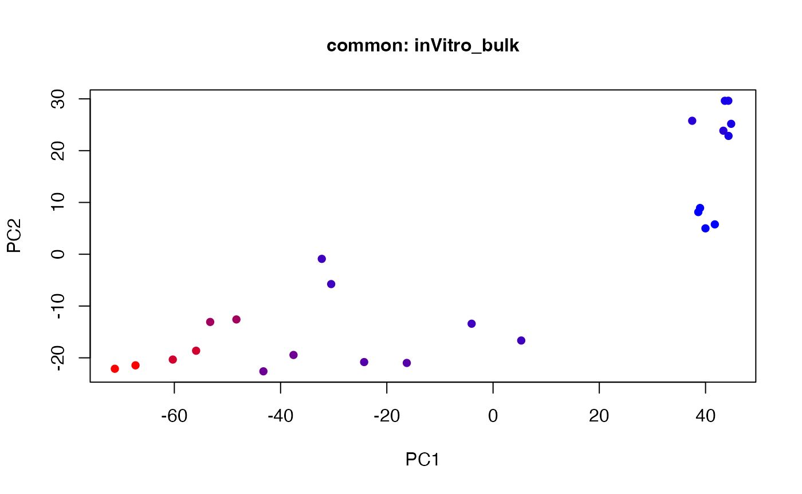
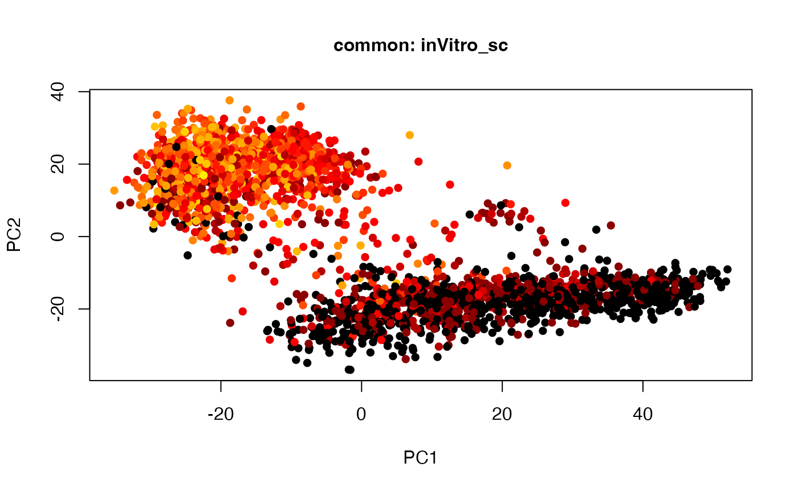
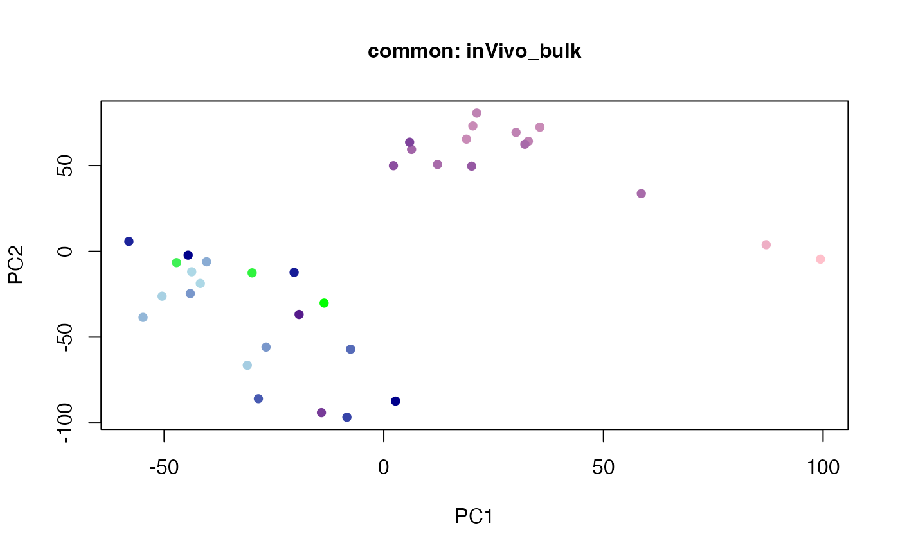
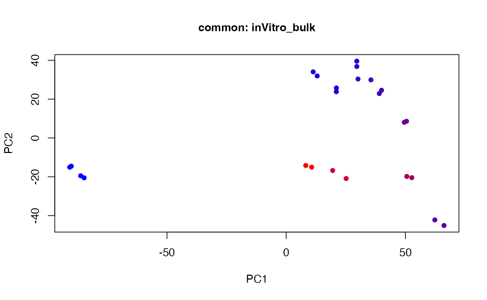

Introduction to twoStageLCA (Two Stage Linked Component Analysis)
Huan Chen
Jinrui Liu
Carlo Colantuoni
30 January, 2022
Source:vignettes/twoStageLCA.Rmd
twoStageLCA.Rmd
Install and load SJD package
To install this package in R, run the following commands:
library(devtools)
install_github("CHuanSite/SJD")Single-Cell RNAseq Example
First, install the ‘googleDrive’ package
install.packages('googledrive')
#> Installing package into '/private/var/folders/hn/15_w90p96zn9px58h76x8sfr0000gn/T/RtmpFMO7n3/temp_libpath1648f7a7afbff'
#> (as 'lib' is unspecified)
#>
#> The downloaded binary packages are in
#> /var/folders/hn/15_w90p96zn9px58h76x8sfr0000gn/T//RtmpsWDfrl/downloaded_packagesDownload RNA and explaination data from Google Drive,
library(googledrive)
## Data file
url_data <- "https://drive.google.com/file/d/1OQovDBPwRX_O2N1GSNY8fzJn-p3-fwQV/view?usp=sharing"
drive_download(url_data, overwrite = TRUE)
#> ! Using an auto-discovered, cached token.
#> To suppress this message, modify your code or options to clearly consent to
#> the use of a cached token.
#> See gargle's "Non-interactive auth" vignette for more details:
#> <https://gargle.r-lib.org/articles/non-interactive-auth.html>
#> ℹ The googledrive package is using a cached token for 'hzchenhuan@gmail.com'.
#> File downloaded:
#> • 'data.zip' <id: 1OQovDBPwRX_O2N1GSNY8fzJn-p3-fwQV>
#> Saved locally as:
#> • 'data.zip'
unzip('data.zip')
## Explaination file
url_explaination <- 'https://drive.google.com/file/d/1S3HdygRCMvPttmVd9cix4GskWj1VPJaM/view?usp=sharing'
drive_download(url_explaination, overwrite = TRUE)
#> File downloaded:
#> • 'data_explaination.zip' <id: 1S3HdygRCMvPttmVd9cix4GskWj1VPJaM>
#> Saved locally as:
#> • 'data_explaination.zip'
unzip('data_explaination.zip')Read data into R
library(tidyverse)
#> ── Attaching packages ─────────────────────────────────────── tidyverse 1.3.0 ──
#> ✓ ggplot2 3.3.3 ✓ purrr 0.3.4
#> ✓ tibble 3.1.0 ✓ dplyr 1.0.5
#> ✓ tidyr 1.1.3 ✓ stringr 1.4.0
#> ✓ readr 1.4.0 ✓ forcats 0.5.1
#> ── Conflicts ────────────────────────────────────────── tidyverse_conflicts() ──
#> x dplyr::combine() masks Biobase::combine(), BiocGenerics::combine()
#> x dplyr::filter() masks stats::filter()
#> x dplyr::lag() masks stats::lag()
#> x ggplot2::Position() masks BiocGenerics::Position(), base::Position()
## Read in files
inVitro_bulk = read.table('1_inVitro_Bulk_Cortecon.plog2_trimNord.txt', stringsAsFactors = FALSE, header = TRUE) %>% select(-1) %>% as.matrix
inVitro_sc = read.table('2_inVitro_SingleCell_scESCdifBifurc.CelSeq_trimNord.txt', stringsAsFactors = FALSE, header = TRUE) %>% select(-1) %>% as.matrix
inVivo_bulk = read.table('3_inVivo_Bulk_BrainSpan_RNAseq_Gene_DFC_noSVA_plog2_trimNord.txt', stringsAsFactors = FALSE, header = TRUE) %>% select(-1) %>% as.matrix
inVivo_sc = read.table('4_inVivo_SingleCell_CtxDevoSC4kTopoTypoTempo_plog2_trimNord.txt', stringsAsFactors = FALSE, header = TRUE) %>% select(-1) %>% as.matrix
inVitro_bulk_scale = scale(t(scale(t(inVitro_bulk), scale = FALSE)))
inVitro_sc_scale = scale(t(scale(t(inVitro_sc), scale = FALSE)))
inVivo_bulk_scale = scale(t(scale(t(inVivo_bulk), scale = FALSE)))
inVivo_sc_scale= scale(t(scale(t(inVivo_sc), scale = FALSE)))
## legends for the 4 datasets
inVitro_bulk_exp = read.table("1_inVitro_Bulk_Cortecon.pd.txt",stringsAsFactors = FALSE, header = T)
inVitro_sc_exp = read.table("2_inVitro_SingleCell_scESCdifBifurc.CelSeq.pd.txt", stringsAsFactors = FALSE, header = T)
inVivo_bulk_exp = read.table("3_inVivo_Bulk_BrainSpan.RNAseq.Gene.DFC.pd.txt", stringsAsFactors = FALSE, header = T)
inVivo_sc_exp = read.table("4_inVivo_SingleCell_CtxDevoSC4kTopoTypoTempo.pd.txt", stringsAsFactors = FALSE, header = T)Conduct Two-stage linked component analysis
library(SJD)
## List of datasets and group assignment and number of components
dataset = list(inVitro_bulk_scale, inVitro_sc_scale, inVivo_bulk_scale, inVivo_sc_scale)
group = list(c(1,2,3,4), c(1,2), c(3,4), c(1,3), c(2,4), c(1), c(2), c(3), c(4))
comp_num = c(2,2,2,2,2,2,2,2,2)
## Output result
twoStageLCA_res = twoStageLCA(dataset, group, comp_num)Visualize the result
par(mfrow = c(2,2))
## common component
plot(t(twoStageLCA_res$score_list[[1]][[1]]), col = inVitro_bulk_exp$color, pch = 16, xlab = "PC1", ylab = "PC2", main = "common: inVitro_bulk", cex = 1, cex.axis = 1, cex.lab = 1, cex.main = 1)
plot(t(twoStageLCA_res$score_list[[2]][[1]]), col = inVitro_sc_exp$COLORby.DCX, pch = 16, xlab = "PC1", ylab = "PC2", main = "common: inVitro_sc", cex = 1, cex.axis = 1, cex.lab = 1, cex.main = 1)
plot(t(twoStageLCA_res$score_list[[3]][[1]]), col = inVivo_bulk_exp$color, pch = 16, xlab = "PC1", ylab = "PC2", main = "common: inVivo_bulk", cex = 1, cex.axis = 1, cex.lab = 1, cex.main = 1)
plot(t(twoStageLCA_res$score_list[[4]][[1]]), col = inVivo_sc_exp$COLORby.DCX, pch = 16, xlab = "PC1", ylab = "PC2", main = "common: inVivo_sc", cex = 1, cex.axis = 1, cex.lab = 1, cex.main = 1)
par(mfrow = c(1,2))
## in vitro component
plot(t(twoStageLCA_res$score_list[[1]][[2]]), col = inVitro_bulk_exp$color, pch = 16, xlab = "PC1", ylab = "PC2", main = "common: inVitro_bulk", cex = 1, cex.axis = 1, cex.lab = 1, cex.main = 1)
plot(t(twoStageLCA_res$score_list[[2]][[2]]), col = inVitro_sc_exp$COLORby.DCX, pch = 16, xlab = "PC1", ylab = "PC2", main = "common: inVitro_sc", cex = 1, cex.axis = 1, cex.lab = 1, cex.main = 1)
## in vivo component
plot(t(twoStageLCA_res$score_list[[3]][[3]]), col = inVivo_bulk_exp$color, pch = 16, xlab = "PC1", ylab = "PC2", main = "common: inVivo_bulk", cex = 1, cex.axis = 1, cex.lab = 1, cex.main = 1)
plot(t(twoStageLCA_res$score_list[[4]][[3]]), col = inVivo_sc_exp$COLORby.DCX, pch = 16, xlab = "PC1", ylab = "PC2", main = "common: inVivo_sc", cex = 1, cex.axis = 1, cex.lab = 1, cex.main = 1)
## bulk component
plot(t(twoStageLCA_res$score_list[[1]][[4]]), col = inVitro_bulk_exp$color, pch = 16, xlab = "PC1", ylab = "PC2", main = "common: inVitro_bulk", cex = 1, cex.axis = 1, cex.lab = 1, cex.main = 1)
plot(t(twoStageLCA_res$score_list[[3]][[4]]), col = inVivo_bulk_exp$color, pch = 16, xlab = "PC1", ylab = "PC2", main = "common: inVivo_bulk", cex = 1, cex.axis = 1, cex.lab = 1, cex.main = 1)
## sc component
plot(t(twoStageLCA_res$score_list[[2]][[5]]), col = inVitro_sc_exp$COLORby.DCX, pch = 16, xlab = "PC1", ylab = "PC2", main = "common: inVitro_sc", cex = 1, cex.axis = 1, cex.lab = 1, cex.main = 1)
plot(t(twoStageLCA_res$score_list[[4]][[5]]), col = inVivo_sc_exp$COLORby.DCX, pch = 16, xlab = "PC1", ylab = "PC2", main = "common: inVivo_sc", cex = 1, cex.axis = 1, cex.lab = 1, cex.main = 1)